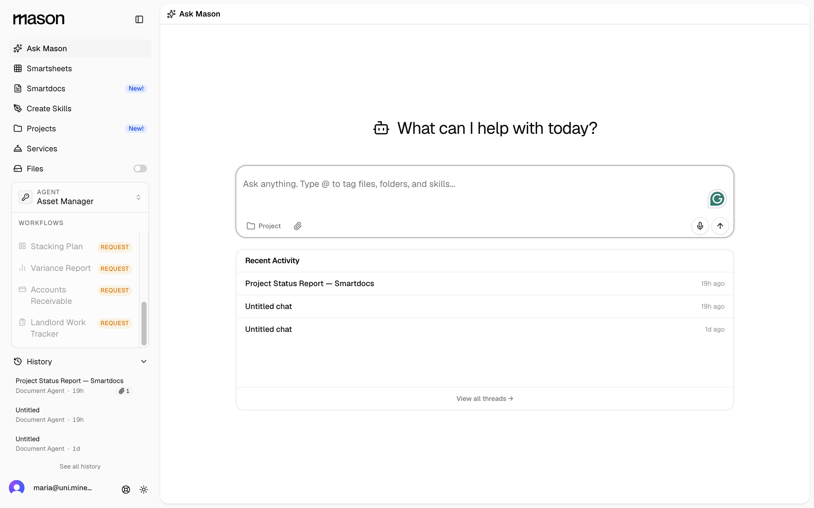
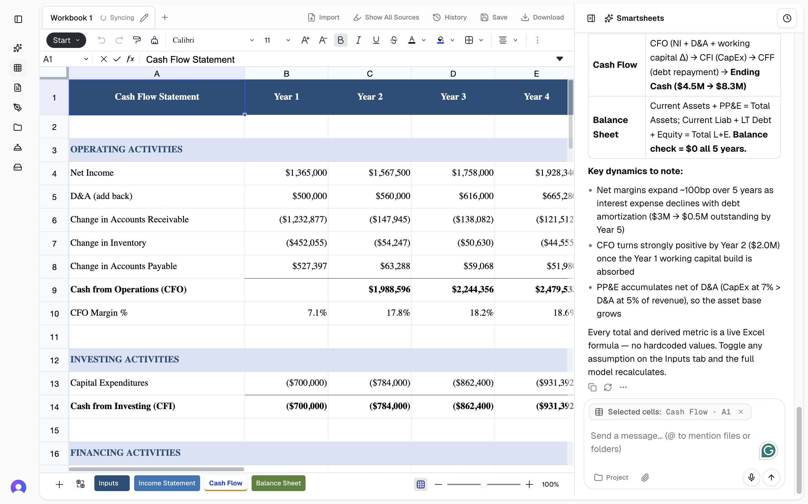

I spent about 30 minutes inside Mason before I drew anything, because I wanted to see what actually felt clumsy in use, not just unpolished in screenshots. Two screens stood out: the Ask Mason home, where every new user forms their first impression, and the Invoice Review output, where the citation feature actually pays off the marketing promise. I redesigned those two, and noted five other things while I was in there.
One caveat: I matched Mason's look as best I could from the live product, but I don't know the exact fonts or tokens the team uses, so some pieces probably look a little off. I'd align with the real design system before shipping any of this.
The brief flags a few known issues like the cluttered toolbar and file sidebar, and I tackle those in the two redesigns below. But while using the app, five other things kept catching my eye that don't seem to be on the list yet.
Instead of a wizard or coach-mark tour that overlays the screen, the home itself onboards by quietly evolving as the user takes action. Three states below: first visit, after running the sample, and in flow at day 30. The chrome that's helpful early on fades as the user stops needing it. All three are stacked so you can see them in sequence.

Sample data. Click any row to see Mason's citation. The flagged row shows what changed. Drop your own draw + backup PDFs anywhere on this page when you're ready.
| COST CODE | DESCRIPTION | CLAIMED | BACKUP | Δ |
|---|---|---|---|---|
| 01-31-52 | HSE Officer | $6,815.00 | $6,815.00 | — |
| 01-56-29 | Covered walkways | $75.00 | $75.00 | — |
| 03-45-13 | Pre-cast Panels flag | $740,927.65 | $719,701.15 | −$21,226.50 |
| CODE | DESCRIPTION | CLAIMED | BACKUP | Δ |
|---|---|---|---|---|
| 01-31-52 | HSE Officer | $6,815.00 | $6,815.00 | — |
| 01-56-29 | Covered walkways | $75.00 | $75.00 | — |
| 03-45-13 | Pre-cast Panels flag | $740,927.65 | $719,701.15 | −$21,226.50 |
Part 1 gets the user to click "Run sample," which triggers a full Invoice Review. That's the moment Mason's citation feature pays off. But if they land in a wall of Excel toolbar buttons with a tiny "Back to Chat" inspector that swaps out every time they click a cell, the demo collapses. This is that screen, redesigned around inspecting instead of authoring.

| A | B | C | D | E | |
|---|---|---|---|---|---|
| 1 | CODE | DESCRIPTION | CLAIMED | BACKUP | Δ |
| 2 | JBPA DIRECT COSTS · PAYROLL & EXPENSES | ||||
| 3 | 01-31-52 | HSE Officer cited | $6,815.00 | $6,815.00 | — |
| 4 | 01-54-80 | Computers, Tablets & IT | $3,200.51 | $3,200.51 | — |
| 5 | 01-61-13 | Project Mgmt Systems (Procore) | $3,000.00 | $3,000.00 | — |
| 6 | 01-31-30 | Senior Project Manager | $8,916.00 | $8,916.00 | — |
| 7 | 01-31-31 | Project Coordinator | $21,635.00 | $21,635.00 | — |
| 8 | DIVISION 03 · CONCRETE & PRECAST | ||||
| 9 | 03-45-13 | Pre-cast Panels flag | $740,927.65 | $719,701.15 | −$21,226.50 |
| 10 | 03-31-00 | Concrete Supply partial | $393,734.50 | $393,734.50 | — |
| 11 | 03-21-00 | Reinforcement Steel | $184,560.00 | $184,560.00 | — |
| 12 | DIVISION 01 · GENERAL CONDITIONS | ||||
| 13 | 01-57-14 | Winter conditions partial | $56,656.00 | $55,556.26 | −$1,099.74 |
| 14 | 01-57-33 | Site Security partial | $4,019.44 | $2,781.38 | −$1,238.06 |
| 15 | 01-58-00 | Project Sign & Hoarding | $2,400.00 | $2,400.00 | — |
| 16 | DIVISION 02 · SITEWORK | ||||
| 17 | 02-30-00 | Excavation | $48,200.00 | $48,200.00 | — |
| 18 | 02-50-00 | Site Improvements | $15,750.00 | $15,750.00 | — |